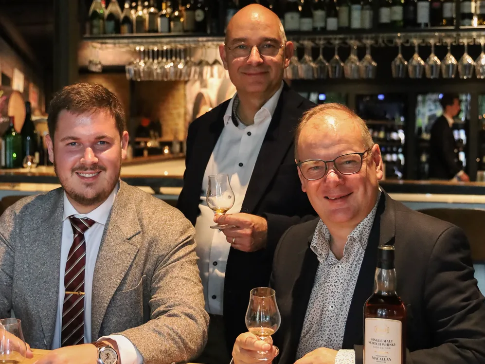

Nieuws ·
Arnhems wijnhuis Robbers en van den Hoogen lanceert eigen whisky

Wijnimporteur Robbers en van den Hoogen uit Arnhem heeft een eigen whiskycollectie op de markt gebracht. De vier whisky's van de RvdH Whisky Cask Edition werden op woensdagavond 30 september gepresenteerd tijdens een proeverij bij het bedrijf.
De presentatie was in handen van Colin Hampden-White, een Schotse whiskykenner die ook schrijft en fotografeert. Hij vertelde de gasten over de afkomst van de whisky's, de manier waarop ze gerijpt zijn en hun smaak.
Vier Schotse whisky's
De collectie omvat drie single malts en een blend. Het gaat om een 33 jaar oude single malt die is gedistilleerd bij The Macallan, een 28-jarige single malt van The Glenrothes, een 16-jarige single malt van Ardmore en een blended Scotch whisky van 37 jaar oud. Het alcoholpercentage van de bottelingen ligt tussen 50,2 en 56,9 procent.
Het bedrijf werd in 1842 opgericht en handelt sindsdien in wijn. Met deze collectie gaat Robbers en van den Hoogen voor het eerst ook sterke drank verkopen. De stap hoort bij een grotere koerswijziging die volgde nadat investeerder Adrian Kreter in 2024 miljoenen in het bedrijf stak.
Tijdens de avond konden de gasten ook een kijkje nemen in de historische wijnkelders van het bedrijf. Bij de whisky werden hapjes geserveerd van chef Björn de Waal, die bij Robbers en van den Hoogen werkt. Verder was er een presentatie voor de pers met Kreter, directeur Pierre Hoogesteger en Hampden-White.
Of de collectie wordt uitgebreid, hangt volgens Kreter af van de vraag. "Naast onze eigen wijnlijn, zijn we trots om nu onze eigen whisky te presenteren. We onderzoeken mogelijkheden om ons portfolio op dit gebied nauwkeurig af te stemmen op de behoeften van onze klanten. Dat gebeurt samen met onze Schotse partners en is afhankelijk van de marktvraag. We hopen van harte dat dit een waardevolle toevoeging wordt aan ons huidige aanbod", aldus Kreter.